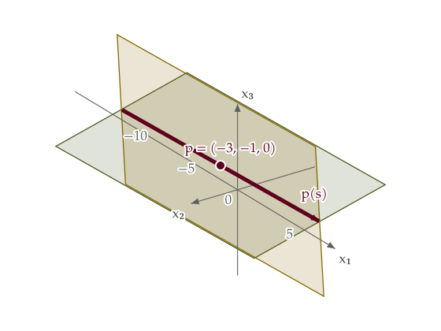

Two planes, one free parameter
Predict: As s changes, will the point leave either plane? Which third equation will keep the whole line?
P₁: x₁ − 2x₂ − 7x₃ = −1
P₂: x₁ − 9x₂ = 6
Common solutions
x₁ = −3 + 9s; x₂ = −1 + s; x₃ = s
The rectangles show finite parts of the infinite planes. Every axis uses the same unit scale, and the view fits all plane corners as you rotate.
Candidate p(s) =
Move s to explore the line, then add a third equation.
Camera controls
Drag the plot, focus it and use the arrow keys, or use these sliders. Reset restores the starting view.

Read the guided explanation
- For every real s, p(s) = (−3 + 9s, −1 + s, s) lies on both displayed planes. The second equation x₁ − 9x₂ = 6 replaces the original second equation to separate the planes visually; the solution line is unchanged. The slider covers −1 ≤ s ≤ 1.
- Adding x₃ = 0 forces s = 0. Only (−3, −1, 0) is a common solution; the rest of the original line becomes a dashed reference.
- Adding x₂ − x₃ = −1 keeps every p(s), because (−1 + s) − s = −1. The common solution set is the entire line.
- Adding x₂ − x₃ = 0 keeps no p(s): the left side is always −1. There is no wine solution highlight because the common solution set is empty.
Why does one free parameter describe a line? What changes when the third equation is added?